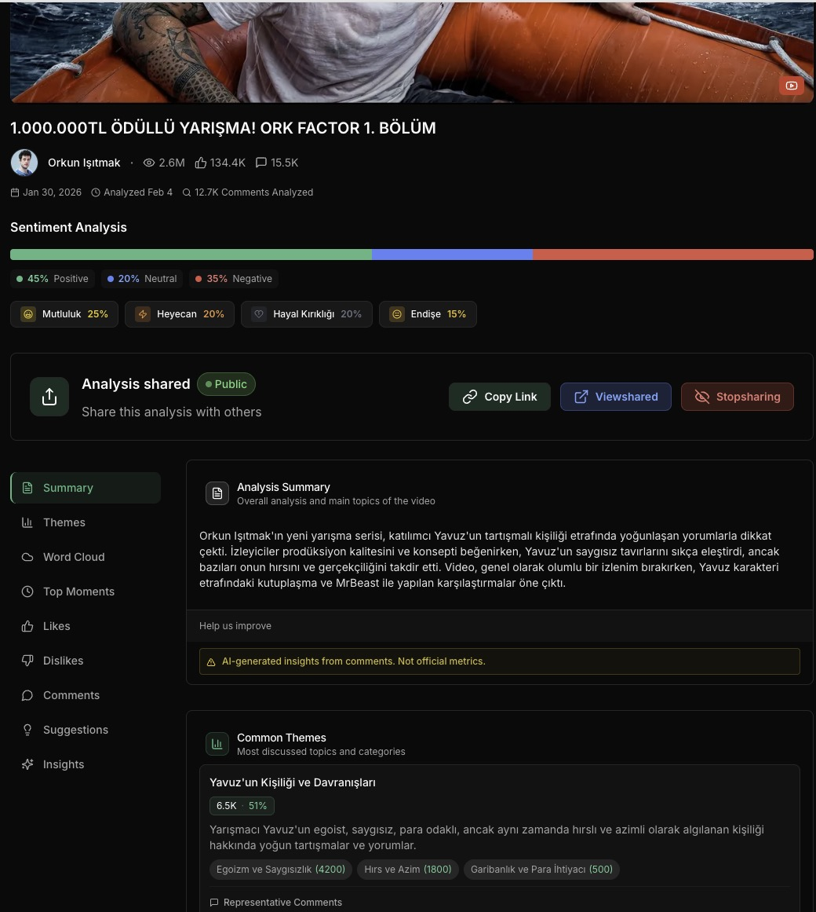
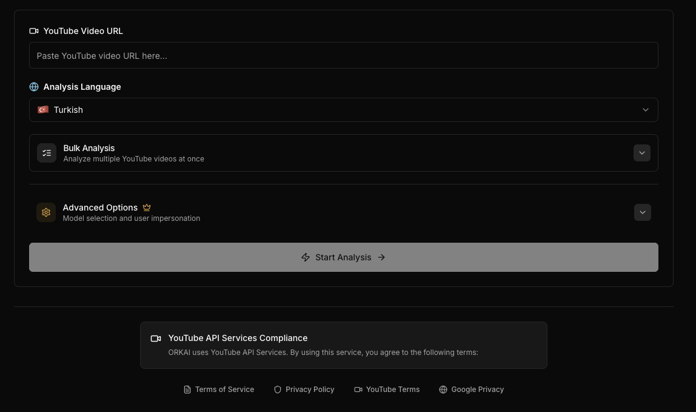

AI SaaS · 2025
01
ORKAI
Multi-model intelligence for the conversations brands cannot read one by one.
ORKAI analyzes 500K+ YouTube, Instagram, and TikTok comments through Gemini, Claude, and OpenAI pipelines with hybrid caching and cost-aware model routing.
Visit ORKAI
